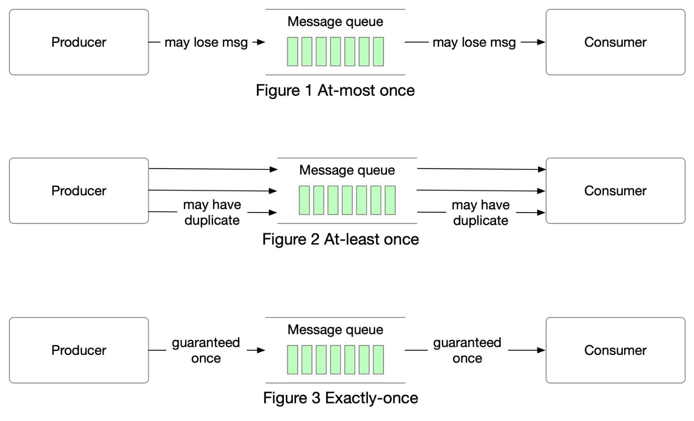

In modern architecture, systems are broken up into small and
independent building blocks with well-defined interfaces between them.
Message queues provide communication and coordination for those
building blocks. Today, let’s discuss different delivery semantics:
at-most once, at-least once, and exactly once.
At-most once
As the name suggests, at-most once means a message will be delivered
not more than once. Messages may be lost but are not redelivered. This
is how at-most once delivery works at the high level.
Use cases:
-
It is suitable for use cases like monitoring metrics, where a small
amount of data loss is acceptable.
At-least once
With this data delivery semantic, it’s acceptable to deliver a message
more than once, but no message should be lost.
Use cases:
-
With at-least once, messages won’t be lost but the same message
might be delivered multiple times. While not ideal from a user
perspective, at-least once delivery semantics are usually good
enough for use cases where data duplication is not a big issue or
deduplication is possible on the consumer side.
-
For example, with a unique key in each message, a message can be
rejected when writing duplicate data to the database.
Exactly once
Exactly once is the most difficult delivery semantic to implement. It
is friendly to users, but it has a high cost for the system’s
performance and complexity.
Use cases:
-
Financial-related use cases (payment, trading, accounting, etc.).
Exactly once is especially important when duplication is not
acceptable and the downstream service or third party doesn’t support
idempotency.